热门景点
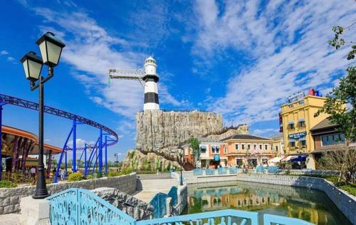
华谊
Hua Yi金鸡湖
Jin Ji Hu太湖
Tai Hu
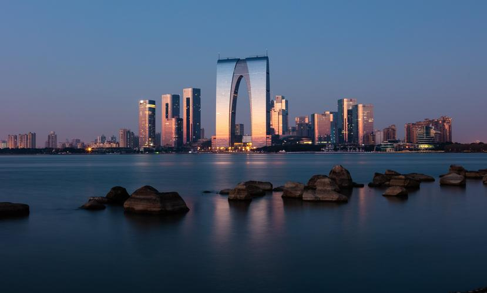
苏州简介
苏州，古称吴，简称为苏，又称姑苏、平江等，是国家历史文化名城和风景旅游城市，国家高新技术产业基地，长江三角洲重要的中心城市之一。位于江苏省东南部，长江三角洲中部，是江苏长江经济带重要组成部分。东临上海，南接嘉兴，西抱太湖，北依长江。
苏州属亚热带季风海洋性气候，四季分明，雨量充沛。种植水稻、小麦、油菜，出产棉花、蚕桑、林果，特产有碧螺春茶叶、长江刀鱼、太湖银鱼、阳澄湖大闸蟹等。
苏州是中国首批24座国家历史文化名城之一，有近2500年历史，是吴文化的发祥地。苏州人多属江浙民系，使用吴语。苏州园林是中国私家园林的代表，被联合国教科文组织列为世界文化遗产。中国大运河苏州段入选世界遗产名录。
苏州非遗
截止目前为止，苏州共有2项世界物质文化遗产和6项世界非物质文化遗产。世界物质文化遗产分别是苏州古典园林（9个园林）和中国大运河苏州段（4个河道和7个景点），世界非物质文化遗产分别是中国昆曲、中国古琴、宋锦、缂丝、苏州端午和苏州香山帮。这些世界遗产主要分别于苏州古城内，共计26个世界遗产点，苏州是名副其实的遗产城市，同时也将是中国世界遗产点最多的城市。
“人间天堂，自在苏州”。苏州一直都被视为最宜居的城市，风景优美，气候宜人。不知道有多少人和我一样，对苏州最早的印象是来自《枫桥夜泊》这首诗。其实，苏州的特别远不止于此，园林建筑，古韵街道，江南古镇等等，处处都有着不可多见的别具一格，对于外人而言，这就是苏州最好的美，但对于苏州人来说，苏州最美的不是如画的风景，而是代代相传的姑苏老味道。
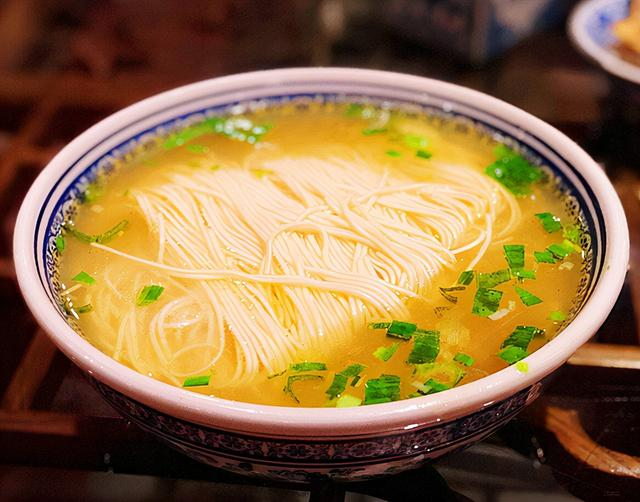
奥灶面
奥灶面是中国十大面条之一，也是苏州昆山的一道传统小吃。奥灶面最主要的特点是体现在面汤味道鲜美，这也是区别于其他汤面的独到之处，主要是用青鱼的鱼鳞、鱼鳃、鱼肉、鱼的粘液提炼而成，面条也是选用龙须面，软硬适中，根根劲道。冬天，也是最适合食用奥灶面的季节，这也是来源于奥灶面“三烫”的特点，面烫、汤烫、碗烫，即使是寒冷的早晨，也能让你浑身暖和。
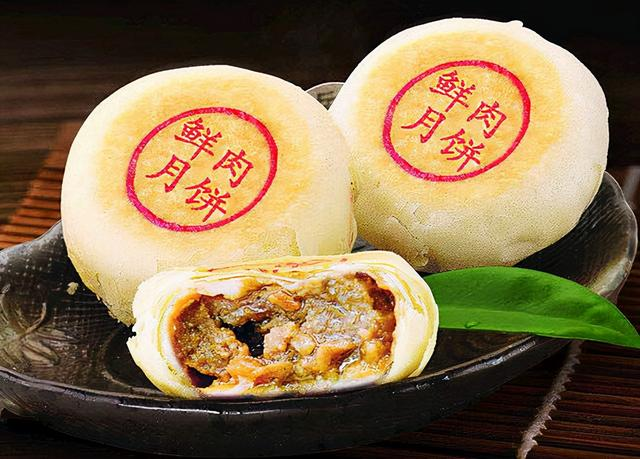
苏州鲜肉月饼
苏州鲜肉月饼让我对月饼有了更深的认识。顾名思义，这月饼的馅料是用鲜肉制作的，而这种月饼的正宗手艺也只保留在苏州。肉汁渗透在月饼中，月饼皮脆糯相宜，口感十分特别。苏州人的月饼手艺更是精湛，月饼在制作过程中，完全不用模具，属于真正的手工产品。
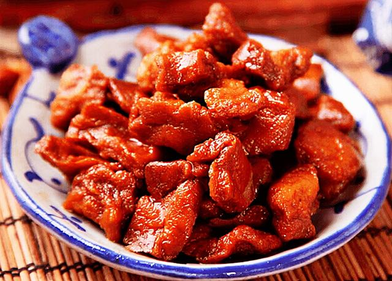
卤汁豆干
卤汁豆腐干是苏著名的传统小吃，已经接近百年历史。卤汁豆腐干的口味不仅有姑苏卤菜的味道，更兼顾了苏州蜜饯的特色，口味鲜甜，软糯适中，风味独特。
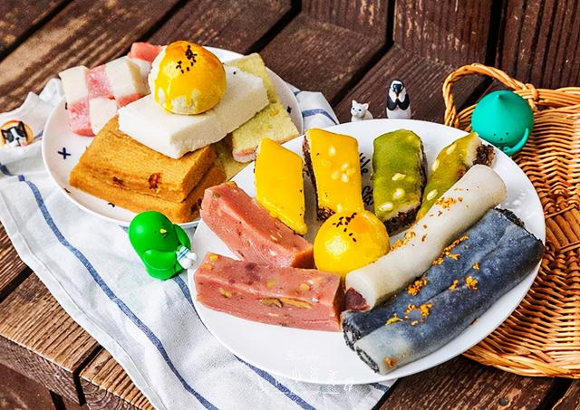
苏州糕团
苏州糕团在苏州人的眼中不仅仅是美食那么简单，已经融入苏州人的骨子里，无论是喜宴，还是家宴，糕团都是最亮眼的主角。苏州糕团主要原料是米粉，一年四季都有不同的应景花样，并且不重样，不管是什么样的宴席，也都有合适的糕团样式，口味软绵甜糯，酥到骨子里。
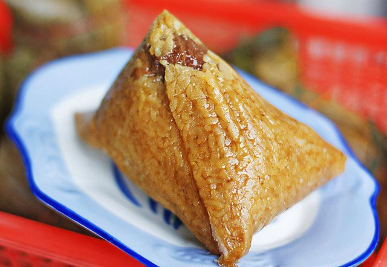
苏式粽子
苏州粽子是苏州的传统名点，也是端午时节，不可缺少的食品。苏州粽子形状与其他地方无异，口味大多也是咸、甜、白三种味道，有荤有素，最特别的苏州粽子，当属猪油夹沙粽，以小红豆和肥肉制作而成，煮熟后，肥肉香甜可口，晶莹如玉，一点都不腻，这也是最地道的苏州风味。白水粽则味道清淡，简单，可以在食用时蘸白糖桂花酱，或者直接食用，这也是食物最初的味道。
苏式糖果
苏式糖果在全国都是有名的，源于清代，至今也有百年历史。苏式糖果都是选用植物果料和花料，配合麦芽糖和白糖制作而成，所有糖果都配料天然，并且加工精细，品种多样。最有特色便是松子糖和杏糖，味道清香独特，口感酥松，十分受欢迎。
苏式蜜饯
苏式蜜饯是苏州的特色小吃，也是传统经典美食，现在也已经走遍全国。历史上，苏式蜜饯一直都是宫廷食品，深受喜爱。苏式蜜饯种类很多，目前大概有160多种。只要是到苏州的朋友，必然会为苏州蜜饯买单，回味无穷。
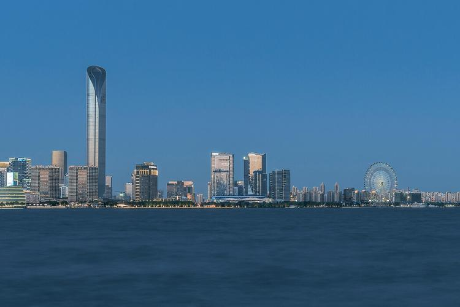
金鸡湖
金鸡湖，位于江苏省苏州市老城区东北部、苏州工业园区中部，南邻独墅湖，中心位置处于北纬31°18′，东经120°42′，水域面积7.4平方公里。
金鸡湖属太湖支流，有进、出水口10余条，北纳娄江之水，西受相门塘、葑门塘来水，出水主要通过斜塘河泻入吴淞江，故属吴淞江水系。金鸡湖境内有音乐喷泉、水上摩天轮、李公堤、桃花岛、金鸡湖大桥瀑布等景点。
2012年7月2日，金鸡湖被国家旅游局评为国家AAAAA级旅游景区，成为了全国唯一的具有商务旅游特质的同级别景区。
从吴中胜地虎丘山朝东远眺，只见一泓碧波在阳光下闪现着迷人的光彩，这就是位于苏州东部的金鸡湖。
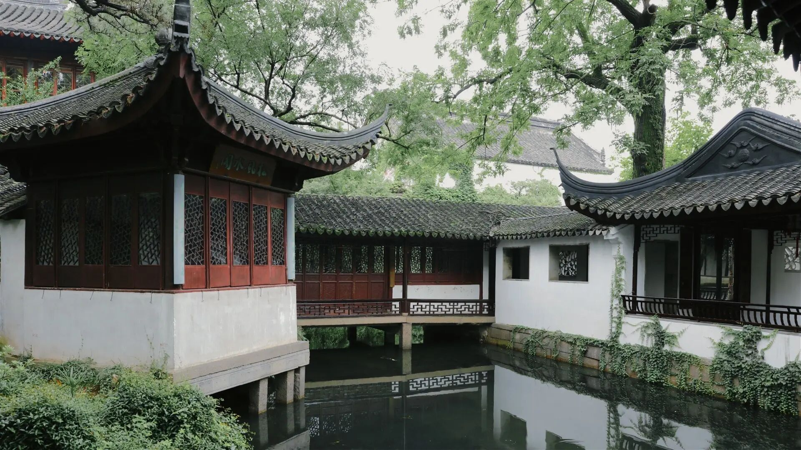
拙政园
拙政园，位于江苏省苏州市，始建于明正德初年（16世纪初），是江南古典园林的代表作品。距今（2022年）已有500多年的历史。拙政园几度分合，或为“私人”宅园，或做“金屋”藏娇，或是“王府”治所，留下了许多诱人探寻的遗迹和典故。
[1]
拙政园与北京颐和园、承德避暑山庄、苏州留园一起被誉为中国四大名园。
拙政园位于苏州城东北隅（东北街178号），截至2014年，仍是苏州存在的最大的古典园林，占地78亩（约合5.2公顷）。全园以水为中心，山水萦绕，厅榭精美，花木繁茂，具有浓郁的江南水乡特色。
拙政园分为东、中、西三部分，东花园开阔疏朗，中花园是全园精华所在，西花园建筑精美，各具特色。园南为住宅区，体现典型江南地区传统民居多进的格局。园南还建有苏州园林博物馆，是一座园林专题博物馆。
[2]
拙政园于1961年3月被列为首批全国重点文物保护单位，1991年被国家计委、旅游局、建设部列为国家级特殊游览参观点。1997年联合国教科文组织批准列入《世界遗产名录》。2007年被国家旅游局评为首批国家AAAAA级旅游景区。
太湖
太湖位于长江三角洲的南缘，古称震泽、具区，又名五湖、笠泽，是中国五大淡水湖之一，位居第三
[1-2]
，界北纬30°55'40"~31°32'58"和东经119°52'32"~120°36'10"之间，位于江苏省南部，北临江苏无锡，南濒浙江湖州，西依江苏常州、江苏宜兴，东近江苏苏州。
[3] 由江苏省对太湖全境进行行政管辖。
太湖湖泊面积2427.8平方公里，水域面积为2338.1平方公里，湖岸线全长393.2公里。其西和西南侧为丘陵山地，东侧以平原及水网为主。
[3]
山塘街
山塘街位于江苏省苏州古城西北，东至红尘中“一二等富贵风流之地”阊门，西至“吴中第一名胜”虎丘，全长约3600米，约合7华里，故称“七里山塘到虎丘”。
唐代，白居易任苏州刺史，对苏州城外西北河道进行疏浚，开挖成山塘河，傍河而建的古街被称为山塘街，沿街均为古建筑。古建筑大多是晚清和民国时期的建筑，为几落几进构成的建筑群体，纵向为落，横向为进。
2010年，山塘街获评“中国文化遗产保护典范单位”，被评为“中国历史文化名街”；2015年，山塘街被中国住建部、文物局评为首批“中国历史文化街区”。
[1]

观前街
观前街（Guanqian
Street），位于江苏省苏州市姑苏区，东起临顿路（醋坊桥），西至人民路（察院场），主街全长780米，因古寺玄妙观而得名。
观前街运用“儒道互补”的原理，以玄妙观为核心，同时在与北局广场相对应处的宫巷东侧，增设一摊贩市场
配合玄妙观广场，形成三点式对称布局。观前街的建筑体量小，形成低矮的建筑轮廓线，建筑色彩以黑、白、灰为主。观前街主街分布着购物商场和老字号商店，餐饮业主要集中在太监弄一带，娱乐休闲场所主要集中在乔司空巷一带。
2018年8月，观前街入选江苏省首批老字号集聚街区。
沙家浜
沙家浜·虞山尚湖旅游区位于江苏省常熟市，旅游区以江南山水文化为依托，融人文、生态、休闲为一体。虞山是国家森林公园，因商周之际吴地先祖虞仲卒葬于此而得名，是我国吴文化的重要发源地；尚湖与虞山相依，因商末姜尚（姜太公）在此隐居垂钓而得名，湖内湿地遍布，鹭鸟翔飞；沙家浜以京剧《沙家浜》而闻名，形成了革命传统教育区、红石民俗文化村、横泾老街、湿地公园等景点，红色教育游、绿色生态游、金色美食游、影视文化游享誉国内外。
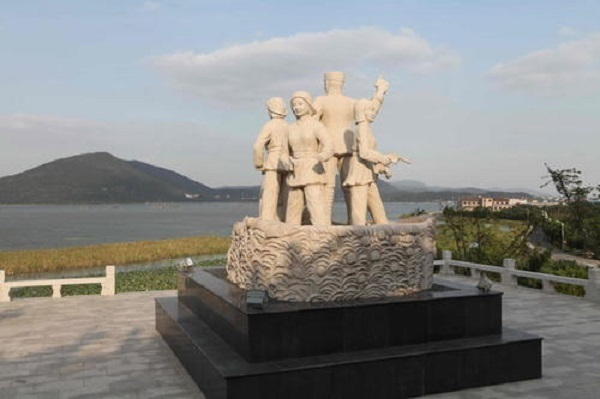
新四军太湖游击队纪念馆
新四军太湖游击队纪念馆位于苏州吴中区光福镇冲山村北山，主体工程占地面积1700平方米，总投资约1000万，历经近十个月的时间打造，正式建成对外开放。纪念馆分三个篇章，展现了新四军太湖抗日游击支队初建、重建、扩建时期的曲折历程。馆内不仅陈列了新四军战士用过的生活用品、作战工具、信件等，还再现了抗战时期的芦苇沟、通信船以及联络站，让人身临其境，仿佛回到了当年的新四军冲山抗战时期。
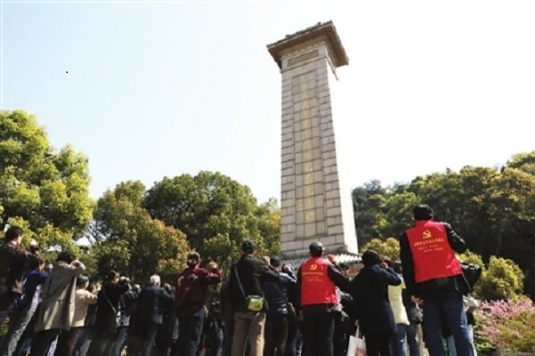
苏州烈士陵园
苏州烈士陵园位于苏州市西郊横山西麓，原名苏州横山烈士陵园，建于1956年4月。2000年2月，中共苏州市委、市政府在原址对烈士陵园进行了全面改建。苏州烈士陵园占地140亩，改建后分纪念瞻仰和烈士安息两个区。纪念瞻仰区居于陵园中心位置，采用主轴线对称布局。轴线长约160米，由西向东依地貌呈阶梯形，相应建筑依次为大门、牌坊、烈士事迹陈列馆、烈士陵园电教馆、悼念广场、纪念碑。
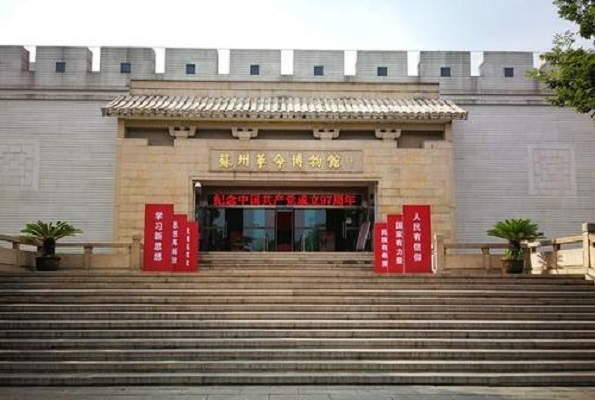
苏州革命博物馆
苏州革命博物馆位于苏州市三香路1216号，由中共苏州市委、市政府批准，于1993年建成开馆。馆占地面积10000平方米，主体建筑7000平方米，展出区面积3000平方米。馆体外观古朴庄重，具有浓郁的地方特色和鲜明的“革命”特征。
联系我们
-
常熟理工学院
-
3348463901@qq.com
-
15062392448
在线留言

苏州市卫星图
苏州地势低平，平原占总面积的55%。苏州分别隶属于两个一级的自然地理区：长江三角洲平原地区和太湖平原地区，分属于4个二级自然区：沿江平原沙洲区、苏锡平原区、太湖及湖滨丘陵区、阳澄淀泖低地区。地貌特征以平缓平原为上，全市的地势低平，自西向东缓慢倾斜，平原的海拔高度3～4米，阳澄湖和吴江一带仅2米左右。
[21]
低山丘陵零星散布，一般高100～350米，分布在西部山区和太湖诸岛，其中以穹窿山最高（342米），还有南阳山（338米）、西洞庭山缥缈峰（336米）、东洞庭山莫里峰（293米）、七子山（294米）、天平山（201米）、灵岩山（182米）、渔洋山（171米）、虞山（262米）、潭山（252米）等。

苏州市电子地图
苏州属亚热带季风海洋性气候，2019年平均气温17.5℃，降水量1216.2毫米。四季分明，气候温和，雨量充沛，土地肥沃，物产丰富，自然条件优越。苏州地区河网密布，周围是全国著名的水稻高产区，农业发达，有“水乡泽国”、“天下粮仓”、“鱼米之乡”之称。有宋以来有“苏湖熟，天下足”的美誉，主要种植水稻、麦子、油菜、林果等。低洼塘田较多，出产莲藕、芡实、茭白等水生作物。特产有鸭血糯、白蒜、柑橘、枇杷、板栗、梅子、桂花、碧螺春茶等。长江刀鱼、阳澄湖大闸蟹和太湖三白（白鱼、银鱼、白虾）等为著名水产品。